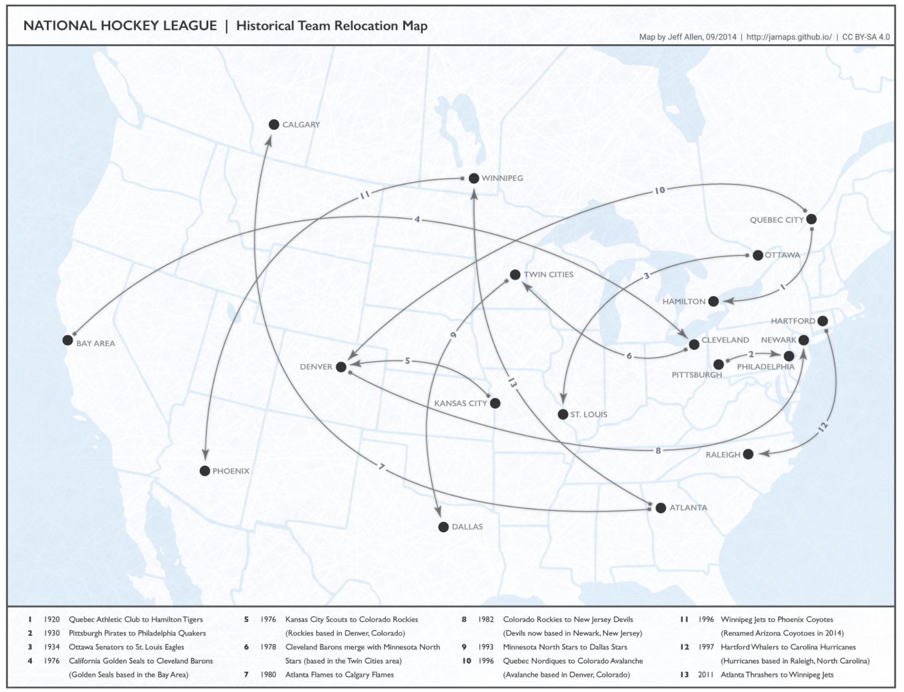
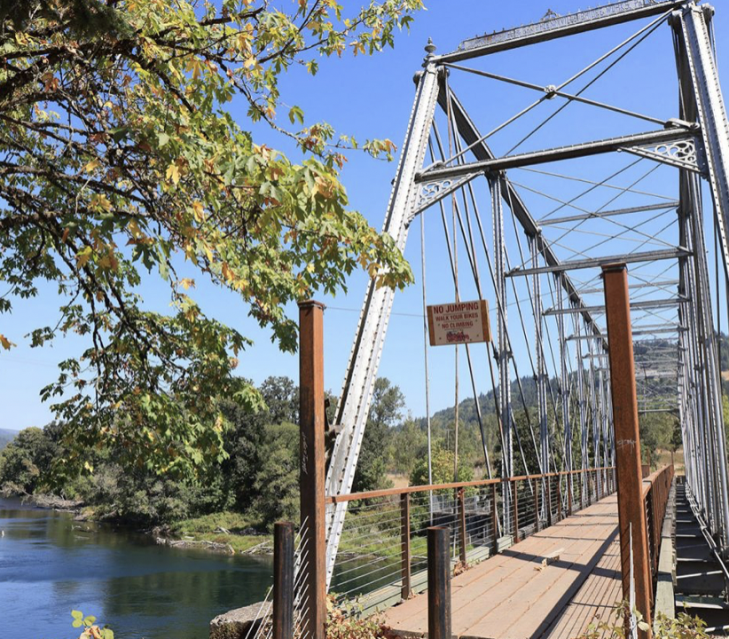

In the news
There are nineteen defunct and relocated National Hockey League (NHL) teams. The NHL Board of Governors review and approve the relocation of any member club. Each team appoints an individual or individuals to represent their team on the Board of Governors. A majority vote is needed for relocation of a club. The first team to relocate was the Quebec Athletics, who relocated to Hamilton, Ontario, to become the Hamilton Tigers. The NHL president at the time, Frank Calder, stripped the franchise from owner Mike Quinn and sold it to a Hamilton-based company. Three franchises became defunct due to the Great Depression: the Philadelphia Quakers, the St. Louis Eagles, and the Montreal Maroons. During their time in the NHL, the defunct Ottawa Senators and Maroons both won the Stanley Cup championship multiple times, with four and two titles respectively. (Full list...)
In the news
The Hayden Bridge is a wrought-iron truss bridge that was manufactured by the Phoenixville Bridge Works in the U.S. state of Pennsylvania. It was built in 1882 and was initially located near Corinne, Utah, crossing the Bear River as part of the first transcontinental railroad. In 1901, the bridge was moved more than 1,000 miles (1,600 km) and reassembled at its present location, crossing the McKenzie River in Springfield, Oregon, where it served as part of the Marcola line for the distribution of lumber. It later closed down due to the closure of the area's lumbermills, until it was converted into a pedestrian bridge in 2019. It is the oldest intact bridge in the state of Oregon. This photograph of the Hayden Bridge was taken as part of a 1990 Historic American Engineering Record survey.
Other areas of Wikipedia

Community portal – The central hub for editors, with resources, links, tasks, and announcements. Village pump – Forum for discussions about Wikipedia itself, including policies and technical issues. Site news – Sources of news about Wikipedia and the broader Wikimedia movement. Teahouse – Ask basic questions about using or editing Wikipedia. Help desk – Ask questions about using or editing Wikipedia. Reference desk – Ask research questions about encyclopedic topics. Content portals – A unique way to navigate the encyclopedia.
Wikipedia's sister projects
Wikipedia is written by volunteer editors and hosted by the Wikimedia Foundation, a non-profit organization that also hosts a range of other volunteer projects: Commons logo Commons Free media repository MediaWiki logo MediaWiki Wiki software development Meta-Wiki logo Meta-Wiki Wikimedia project coordination Wikibooks logo Wikibooks Free textbooks and manuals Wikidata logo Wikidata Free knowledge base Wikinews logo Wikinews Free-content news Wikiquote logo Wikiquote Collection of quotations Wikisource logo Wikisource Free-content library Wikispecies logo Wikispecies Directory of species Wikiversity logo Wikiversity Free learning tools Wikivoyage logo Wikivoyage Free travel guide Wiktionary logo Wiktionary Dictionary and thesaurus
Wikipedia languages
This Wikipedia is written in English. Many other Wikipedias are available; some of the largest are listed below.
1,000,000+ articles
العربيةDeutschEspañolFrançaisItalianoNederlands日本語PolskiPortuguêsРусскийSvenskaУкраїнськаTiếng Việt中文
250,000+ articles
Bahasa IndonesiaBahasa MelayuBân-lâm-gúБългарскиCatalàČeštinaDanskEsperantoEuskaraفارسیעברית한국어MagyarNorsk BokmålRomânăSrpskiSrpskohrvatskiSuomiTürkçe
50,000+ articles
AsturianuবাংলাBosanskiEestiΕλληνικάSimple EnglishGaeilgeGalegoHrvatskiქართულიLatviešuLietuviųമലയാളംМакедонскиNorsk nynorskShqipSlovenčinaSlovenščinaไทย